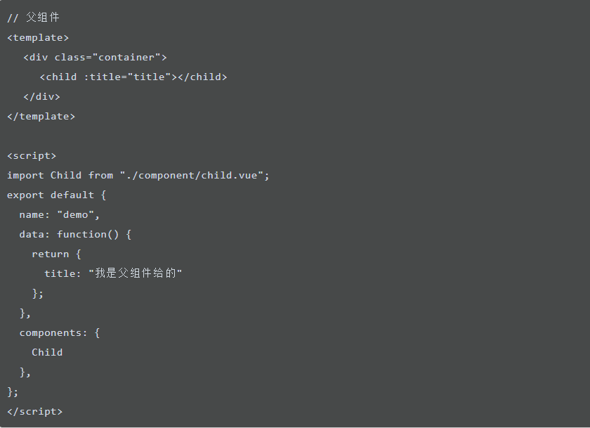
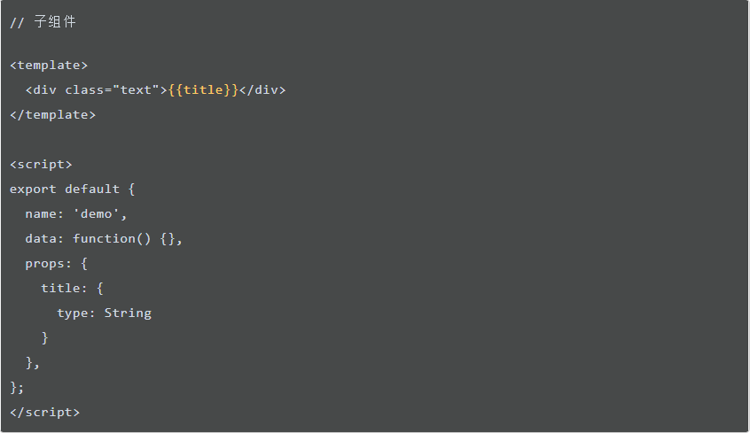
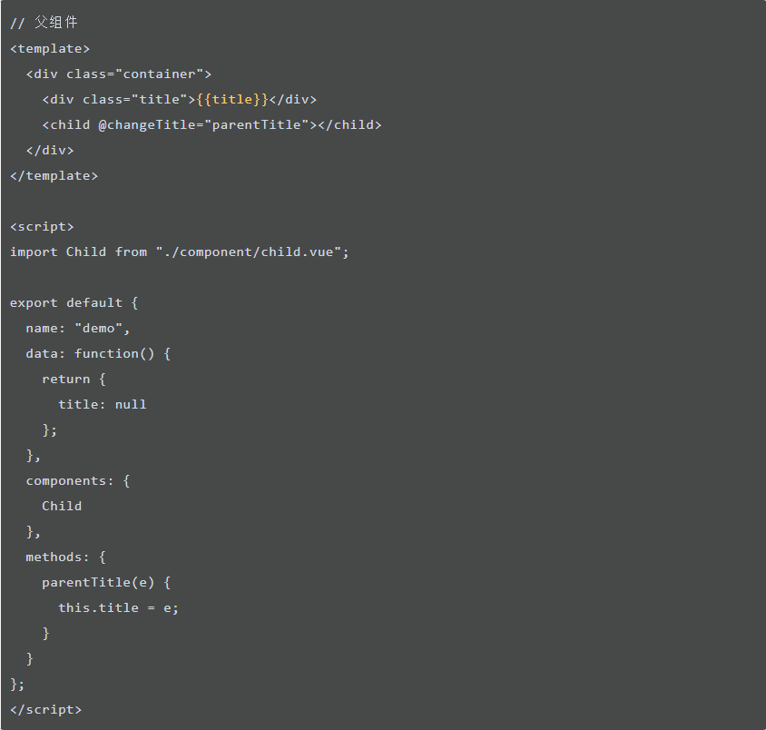
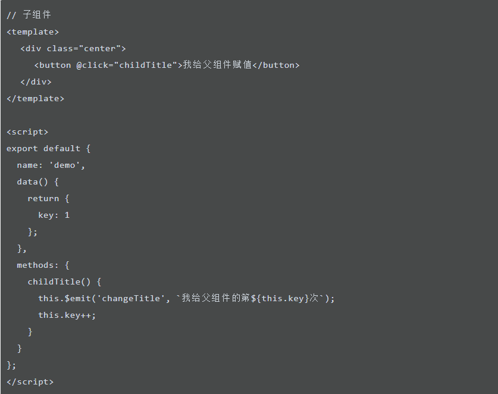

<!DOCTYPE html>
<html lang="en">

<head>
  <meta charset="utf-8" />
    
  <meta name="viewport" content="width=device-width, initial-scale=1, maximum-scale=1" />
  <title>
    Vue组件通信 |  varvar的博客
  </title>
  
  <link rel="shortcut icon" href="/favicon.ico" />
  
  
<link rel="stylesheet" href="/css/style.css">

  
<script src="/js/pace.min.js"></script>


  

  

<meta name="generator" content="Hexo 4.2.0"></head>

</html>

<body>
  <div id="app">
    <main class="content">
      <section class="outer">
  <article id="post-Vue组件通信" class="article article-type-post" itemscope
  itemprop="blogPost" data-scroll-reveal>

  <div class="article-inner">
    
    <header class="article-header">
       
<h1 class="article-title sea-center" style="border-left:0" itemprop="name">
  Vue组件通信
</h1>
  

    </header>
    

    
    <div class="article-meta">
      <a href="/2020/01/03/Vue%E7%BB%84%E4%BB%B6%E9%80%9A%E4%BF%A1/" class="article-date">
  <time datetime="2020-01-03T06:30:09.000Z" itemprop="datePublished">2020-01-03</time>
</a>
      
    </div>
    

    
    
    <div class="tocbot"></div>


    

    <div class="article-entry" itemprop="articleBody">
      


      

      
      <h2 id="Vue组件通信"><a href="#Vue组件通信" class="headerlink" title="Vue组件通信"></a>Vue组件通信</h2><h3 id="一、父子间传递-prop-emit"><a href="#一、父子间传递-prop-emit" class="headerlink" title="一、父子间传递 prop / $emit"></a>一、父子间传递 prop / $emit</h3><p>父组件向子组件传值，通过绑定属性来向子组件传入数据，子组件通过 <strong>Props</strong> 属性获取对应数据。</p>
<p></p>
<p></p>
<p>子组件向父组件传值（通过事件形式），子组件通过 <strong>$emit</strong> 事件向父组件发送消息，将自己的数据传递给父组件。</p>
<p></p>
<p></p>
<h3 id="二、-emit-on"><a href="#二、-emit-on" class="headerlink" title="二、$emit / $on"></a>二、$emit / $on</h3><h3 id="三、Vuex"><a href="#三、Vuex" class="headerlink" title="三、Vuex"></a>三、Vuex</h3><h3 id="四、-attrs-listeners"><a href="#四、-attrs-listeners" class="headerlink" title="四、$attrs / $listeners"></a>四、$attrs / $listeners</h3><h3 id="五、Provider-Inject"><a href="#五、Provider-Inject" class="headerlink" title="五、Provider / Inject"></a>五、Provider / Inject</h3><h3 id="六、-parent-children-amp-refs"><a href="#六、-parent-children-amp-refs" class="headerlink" title="六、$parent / $children &amp; $refs"></a>六、$parent / $children &amp; $refs</h3><h3 id="参考资料："><a href="#参考资料：" class="headerlink" title="参考资料："></a>参考资料：</h3><p><a href="https://mp.weixin.qq.com/s/JLgASmwS7QI6h-ZBPlMBkw" target="_blank" rel="noopener">https://mp.weixin.qq.com/s/JLgASmwS7QI6h-ZBPlMBkw</a></p>

      
      <!-- 打赏 -->
      
    </div>
    <footer class="article-footer">
      <a data-url="https://wangning0916.github.io/2020/01/03/Vue%E7%BB%84%E4%BB%B6%E9%80%9A%E4%BF%A1/" data-id="ck4xsi9fi0005psumgmqa4433"
        class="article-share-link">分享</a>
      
  <ul class="article-tag-list" itemprop="keywords"><li class="article-tag-list-item"><a class="article-tag-list-link" href="/tags/VUE/" rel="tag">VUE</a></li></ul>

    </footer>

  </div>

  
  
  <nav class="article-nav">
    
    
      <a href="/2020/01/03/JS%E6%89%A7%E8%A1%8C%E6%9C%BA%E5%88%B6/" class="article-nav-link">
        <strong class="article-nav-caption">下一篇</strong>
        <div class="article-nav-title">JS执行机制</div>
      </a>
    
  </nav>


  

  
  
<!-- valine评论 -->
<div id="vcomments-box">
    <div id="vcomments">
    </div>
</div>
<script src="//cdn1.lncld.net/static/js/3.0.4/av-min.js"></script>
<script src='https://cdn.jsdelivr.net/npm/valine@1.3.10/dist/Valine.min.js'></script>
<script>
    new Valine({
        el: '#vcomments',
        notify: false,
        verify: false,
        app_id: '',
        app_key: '',
        path: window.location.pathname,
        avatar: 'mp',
        placeholder: '给我的文章加点评论吧~',
        recordIP: true
    });
    const infoEle = document.querySelector('#vcomments .info');
    if (infoEle && infoEle.childNodes && infoEle.childNodes.length > 0) {
        infoEle.childNodes.forEach(function (item) {
            item.parentNode.removeChild(item);
        });
    }
</script>
<style>
    #vcomments-box {
        padding: 5px 30px;
    }

    @media screen and (max-width: 800px) {
        #vcomments-box {
            padding: 5px 0px;
        }
    }

    #vcomments-box #vcomments {
        background-color: #fff;
    }

    .v .vlist .vcard .vh {
        padding-right: 20px;
    }

    .v .vlist .vcard {
        padding-left: 10px;
    }
</style>

  

  
  
  

</article>
</section>
      <footer class="footer">
  <div class="outer">
    <ul class="list-inline">
      <li>
        &copy;
        2020
        哇哇
      </li>
      <li>
        
      </li>
    </ul>
    <ul class="list-inline">
      <li>
        
      </li>
      <li>
        <!-- cnzz统计 -->
        
      </li>
    </ul>
  </div>
</footer>
    <div class="to_top">
        <div class="totop" id="totop">
  <i class="ri-arrow-up-line"></i>
</div>
      </div>
    </main>
    
    <aside class="sidebar">
      
        <button class="navbar-toggle"></button>
<nav class="navbar">
  
  <div class="logo">
    <a href="/"></a>
  </div>
  
  <ul class="nav nav-main">
    
    <li class="nav-item">
      <a class="nav-item-link" href="/">主页</a>
    </li>
    
    <li class="nav-item">
      <a class="nav-item-link" href="/archives">目录</a>
    </li>
    
    <li class="nav-item">
      <a class="nav-item-link" href="/tags">标签</a>
    </li>
    
    <li class="nav-item">
      <a class="nav-item-link" href="/about">关于我</a>
    </li>
    
  </ul>
</nav>
<nav class="navbar navbar-bottom">
  <ul class="nav">
    <li class="nav-item">
      
      <a class="nav-item-link nav-item-search"  title="Search">
        <i class="ri-search-line"></i>
      </a>
      
      
      <a class="nav-item-link" target="_blank" href="/atom.xml" title="RSS Feed">
        <i class="ri-rss-line"></i>
      </a>
      
    </li>
  </ul>
</nav>
<div class="search-form-wrap">
  <div class="local-search local-search-plugin">
  <input type="search" id="local-search-input" class="local-search-input" placeholder="Search...">
  <div id="local-search-result" class="local-search-result"></div>
</div>
</div>
      </aside>
      <div id="mask"></div>

<!-- #reward -->
<div id="reward">
  <span class="close"><i class="ri-close-line"></i></span>
  <p class="reward-p"><i class="ri-cup-line"></i></p>
  <div class="reward-box">
    
    
  </div>
</div>
      
<script src="/js/jquery-2.0.3.min.js"></script>


<script src="/js/jquery.justifiedGallery.min.js"></script>


<script src="/js/lazyload.min.js"></script>


<script src="/js/busuanzi-2.3.pure.min.js"></script>


  
<script src="/fancybox/jquery.fancybox.min.js"></script>


  
<script src="/js/tocbot.min.js"></script>

  <script>
    // Tocbot_v4.7.0  http://tscanlin.github.io/tocbot/
    tocbot.init({
      tocSelector: '.tocbot',
      contentSelector: '.article-entry',
      headingSelector: 'h1, h2, h3, h4, h5, h6',
      hasInnerContainers: true,
      scrollSmooth: true,
      positionFixedSelector: '.tocbot',
      positionFixedClass: 'is-position-fixed',
      fixedSidebarOffset: 'auto',
    });
  </script>


<script>
  var ayerConfig = {
    mathjax: false
  }
</script>


<script src="/js/ayer.js"></script>


<script src="https://cdn.jsdelivr.net/npm/jquery-modal@0.9.2/jquery.modal.min.js"></script>
<link rel="stylesheet" href="https://cdn.jsdelivr.net/npm/jquery-modal@0.9.2/jquery.modal.min.css">


<script type="text/javascript" src="https://js.users.51.la/20544303.js"></script>
  
  
  </div>
<script src="/live2dw/lib/L2Dwidget.min.js?094cbace49a39548bed64abff5988b05"></script><script>L2Dwidget.init({"pluginModelPath":"assets/","model":{"jsonPath":"/live2dw/assets/hijiki.model.json"},"display":{"position":"right","width":150,"height":300},"log":false,"pluginJsPath":"lib/","pluginRootPath":"live2dw/","tagMode":false});</script></body>

</html>